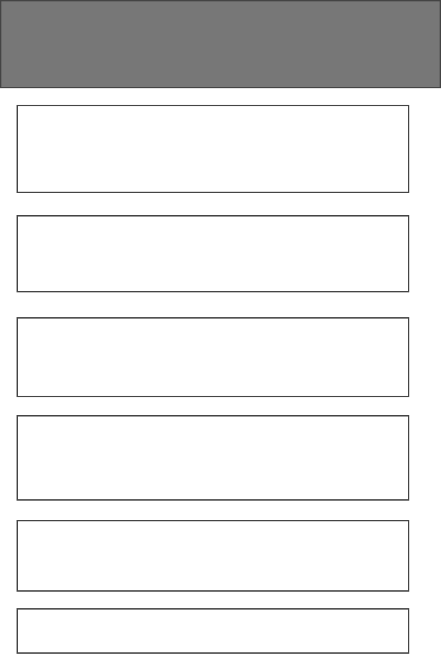
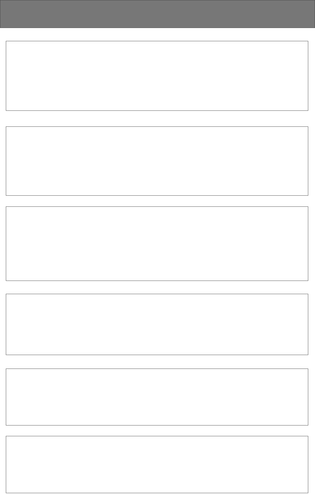

Site Name
Ndikelionwu Chamber of Commerce
This name was selected because it accurately represents the location and purpose of the site, which is to promote the local businesses, attractions, and community of Ndikelionwu.
Site Purpose
The Ndikelionwu Chamber of Commerce website aims to:
- Strengthen the local economy by promoting member businesses, attracting new businesses, and encouraging tourism.
- Provide a central hub for residents, businesses, and visitors by providing community resources, event details, and local business directory services.
Scenarios
Here are some scenarios reflecting questions potential site visitors might have:
- What are the upcoming community events in Ndikelionwu that support local businesses?
- How can I become a member of the Ndikelionwu Chamber of Commerce?
- What are the demographic trends in Ndikelionwu, and how do they impact local business?
- What are the benefits of joining the Ndikelionwu Chamber of Commerce?
Color Schema
The color schema for the Ndikelionwu Chamber of Commerce site includes:
- Primary Color (#0072bc): Used for headers, buttons, and navigation to reflect the community's vibrant and welcoming nature.
- Secondary Color (#ffcc00): Applied as accents for call-to-action elements and to highlight important information, symbolizing the sunny and optimistic outlook of Ndikelionwu.
Additional colors for backgrounds and text will be chosen to ensure readability and contrast, such as dark grey (#333) for text on light backgrounds and white (#ffffff) for backgrounds.
Typography
The typography for the Ndikelionwu Chamber of Commerce website consists of two main fonts:
- Open Sans: Used for all body text to ensure clear, readable content across devices.
- Lato: Used for headings to give a modern, professional look that matches the site's branding.
Wireframe
Mobile View:

Larger View (Desktop):
